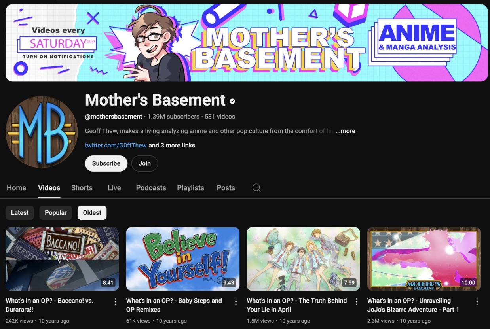
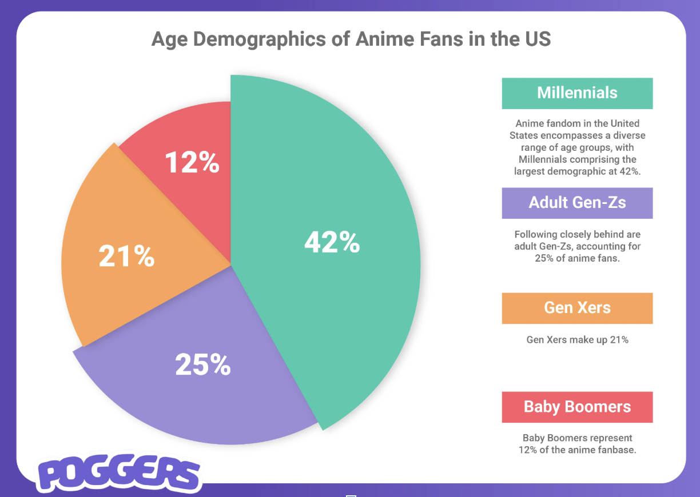

I’m bringing a multidisciplinary view on anime into my archiving blog. Particularly, how anime influences pop culture and acts as both a mirror and driver of societal norms. I want my site to show how anime is a source of entertainment but beyond that, social commentary, and collective exploration of identity through peer-reviewed scholarly papers and fan generated content such as Reddit. I will tackle the social impacts of this entertainment media from a statistics-based and personal point of view with these sources of information. Implementing a multifaceted approach to my research will help paint a more complete picture as to how anime bleeds into our everyday lives.

I approach my project’s research by first understanding the existing literature. By that I mean reading anime forums such as the r/anime subreddit and MyAnimeList forum for shows that I’m interested in researching. In doing so, I get a better grasp of the general sentiment and what sentiments people resonate the most with.
Afterwards, I proceed to search for academic literature in the anime’s cultural globalization. I really like Joshua Michael Draper’s “The Cool Japan Project and Globalization of Anime and Manga in the United States” thesis. I particularly enjoyed how he discussed that “Cool Japan” was a government-backed project to promote Japanese culture worldwide, much like how South Korea had a similar project to reshape their global image. Papers like these taught me about how anime is not only an impactful force for cultural exchange globally but also as a Japanese marketing campaign.
With knowledge from established research and anime origins as well as existing forums in hand, my next steps were to ensure that I was collecting information from a range of genres, creators, and fan POVs. Some examples of this are AniReviews and Mother’s Basement that have made videos on various anime for the last 10 years.

I hope that the public’s takeaway after seeing my archive is a deeper appreciation of Anime and how it sparks reflection on gender while building communities. In terms of scholarly takeaways, I hope that anime researchers can start to merge formal and lived experiences in their works more frequently. Participation from diverse communities is what makes these shows so relatable and enjoyable.

I’ve noticed for a while that many of my peers that enjoy anime tend to be from rather marginalized groups. After some deep-diving, I realized that there are statistics that support my stance. For instance, a survey done by Times of India shows that Gen Z fans in the US are “nearly twice as likely to be Black or Asian as the general population, and 39%+ identify as LGBTQ+.”